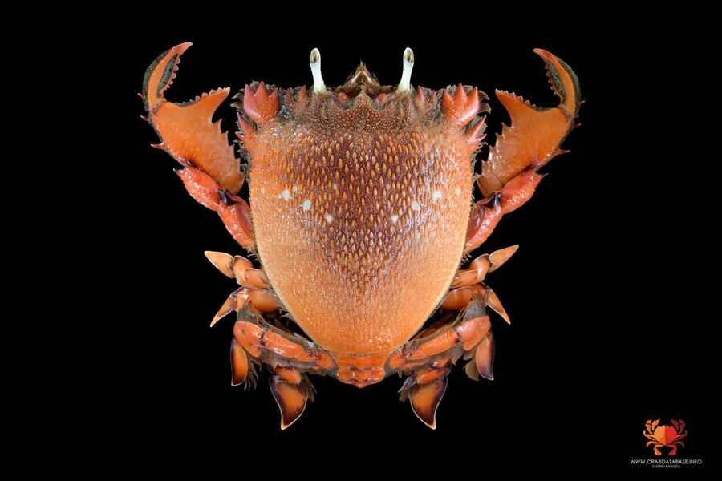

甲壳动物 · 动物界
蛙蟹 Ranina ranina

外形像蛙的奇特蟹类，头胸甲前宽后窄，螯足扁平如铲，善于在沙中挖掘，生活在热带和亚热带浅海。
- 分类
- 门节肢动物门纲软甲纲目十足目科蛙蟹科属蛙蟹属
- 栖息环境
- 热带和亚热带浅海沙质海底，白天埋在沙中
- 地理分布
- 中国南海、日本、东南亚和澳大利亚北部海域
- 保护级别
- IUCN 暂无评估；中国未列入国家重点保护名录
物种志
蛙蟹头胸甲长 10–15 cm，前部宽大、后部收窄，形似蛙类，体色橙红或粉红，表面有颗粒；螯足扁平宽大，指节呈铲状，步足也扁平，适合在沙中挖掘和游泳。
它分布于中国南海、日本、东南亚和澳大利亚的热带浅海，栖息于沙质海底，白天埋在沙中，夜间出来捕食贝类、蠕虫和小鱼。蛙蟹靠铲状的螯足挖掘沙洞，遇到危险时迅速钻进沙里，只露出眼睛；它的眼睛长在眼柄上，可以独立转动观察四周。它的肉质鲜美，是沿海经济蟹类之一，但由于栖息地破坏和过度捕捞，资源量需要关注，繁殖期雌蟹抱卵，幼体浮游生活。目前 IUCN 暂无评估；中国未列入国家重点保护名录。
形态与习性
- 食性捕食贝类、蠕虫和小鱼
- 体型头胸甲长 10–15 cm
- 识别头胸甲前宽后窄，形似蛙类
- 习性昼伏夜出，用铲状螯足挖沙
- 繁殖雌蟹抱卵，幼体浮游生活
- 经济肉质鲜美，是沿海经济蟹类
趣味知识
- 蛙蟹的头胸甲前宽后窄，加上凸起的眼睛，看起来很像一只蛙。
- 它的螯足和步足都扁平成铲状，是挖沙的高手。
- 受惊时它会迅速钻进沙里，只把眼睛露在外面观察动静。